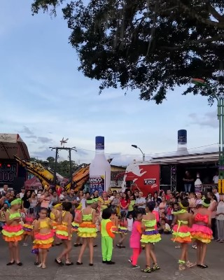

Fiestas Populares y del Café
Se celebran cada año en el mes de noviembre. Incluyen muestras culturales, desfiles, cabalgatas, música y concursos de calidad del café.
El evento más representativo del municipio, que celebra el trabajo del campo y la caficultura.
Se celebran cada año en el mes de noviembre. Incluyen muestras culturales, desfiles, cabalgatas, música y concursos de calidad del café.

Se realiza en noviembre como parte del día del campesino y destaca la labor de los caficultores locales.

Un evento cultural y gastronómico realizado en el primer semestre (hacia marzo) que incluye exposiciones de orquídeas y muestras del campo.

Tradicionalmente se programan encuentros y mercados campesinos el primer viernes de cada mes o en fechas especiales de cosecha.